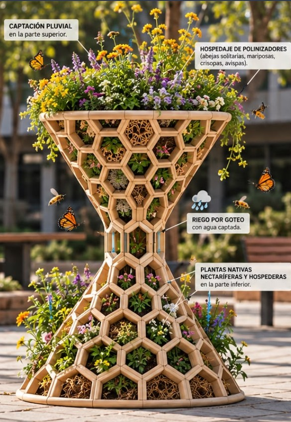

Es un espacio vivo y educativo, como un "oasis de descanso y alimentación" para abejas, mariposas, colibríes y otros animales polinizadores afectados por el crecimiento de las ciudades.
Lu'um Naj se compone de "Hoteles de polinizadores" e islas de polinización, un lugar donde pueden descansar, comer y polinizar comodamente.
El objetivo de Kuunaj es ser una herramienta pedagógica viva. Y que los estudiantes aprendendan sobre la importancia de los polinizadores en nuestros alimentos y convertirse en guardianes activos del medio ambiente.
La polinización es el traslado de polen de una flor a otra, ya sea por la acción del viento o de animales polinizadores (como abejas y mariposas) que buscan néctar.
Este proceso es fundamental porque permite que las plantas se reproduzcan, produzcan semillas y den frutos, lo que sostiene gran parte de los ecosistemas y de nuestros alimentos.